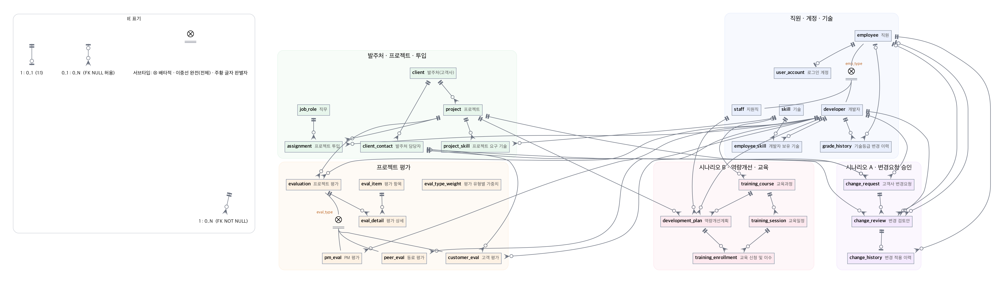

시작하기
Docker Desktop 과 Python 3 만 있으면 됩니다. 저장소는 비공개라 초대를 수락해야 받을 수 있습니다: github.com/moovingGun/database-teamproject
받기와 DB 기동
git clone https://github.com/moovingGun/database-teamproject.git && cd database-teamproject docker compose up -d웹 앱 실행 → http://127.0.0.1:5001
python3 -m venv .venv && .venv/bin/pip install -r requirements.txt .venv/bin/python run.py데모 계정 (비밀번호 공통
pass1234)아이디 역할 해 볼 것 ceo경영진 대시보드, 시점별 투입현황, 직원 검색, 변경요청 승인, 교육 현황 pm01PM PM 평가, 고객 평가 의뢰, 변경요청 접수·고객 동의·반영 dev01개발자 내 정보·기술, 동료 평가, 내 교육 신청 edu01교육 담당자 역량개선계획 수립, 수료 기록 데이터를 처음 상태로 되돌리기:
./db/reset.sh· 전 화면 점검:./scripts/smoke_test.sh
이번에 추가된 것
팀원 자료(시나리오 2개, 요구사항 정의서 엑셀 초안)를 반영했습니다.
시나리오 A고객사 변경요청 승인
PM 접수 → 검토안 → 경영진 승인 → 고객 동의 → 계획 반영. 변경 전후 종료예정일·계약금액을 이력으로 남깁니다.
시나리오 B평가 기반 교육 이수
교육 담당자가 평가 의견과 보유 기술을 보고 계획을 세우고, 직원이 추천 과정 일정에 신청, 종료 후 수료를 기록합니다.
10/26 제출요구사항 정의서 (엑셀 양식)
팀원 초안 양식에 URQ001~010(Problem Description 만),확인 사항 20개와 결정 내용, 추적표 시트를 채웠습니다. docs/01-1_요구사항정의서.xlsx
설계직원 서브타입 강제 (BR-30)
평가처럼 직원도 판별자와 다른 서브타입, 개발자이면서 지원직인 데이터를 DB 가 거부합니다. 앱 계정은 등록 프로시저로만 직원을 만들 수 있어 서브타입 없는 직원도 생기지 않습니다.
데이터과거 프로젝트 보강
프로젝트 60개, 과거 월평균 동시 수행 10.1개로 "월평균 10개" 규모에 맞췄고, 관계마다 자식 없는 부모 예시를 넣었습니다.
문서ERD 이미지 · 스크린샷 자동 생성
DB 에서 ERD 를, 실제 앱에서 화면을 자동으로 만들어 보고서에 바로 씁니다.
검증점검 스크립트
전 화면 점검, 쓰기 흐름 점검, DB 규칙 거부 32건을 스크립트 하나씩으로 돌릴 수 있습니다.
DB 스키마 (ERD)
실제 DB 의 information_schema 에서 자동 생성한 IE(까마귀발) 표기 그림입니다. 관계선 끝: ┼┼ 정확히 1 · ┼○ 0 또는 1 · ○< 0 이상. 모든 1:N 의 1측 반대편이 ○< 라서 Total:Total 관계가 없습니다. 상세 그림의 ● 는 NOT NULL 입니다. 그림을 누르면 크게 봅니다.

전체 개요 — 업무 영역별로 묶었습니다. 상세 탭에서는 각 테이블의 컬럼, PK·FK·UK 를 보여 줍니다. 원본: docs/erd/
화면 둘러보기
시드 데이터 상태에서 각 역할로 로그인해 자동 촬영한 실제 화면 24장입니다. 그림을 누르면 원본 크기로 봅니다.
조별 특화 시나리오
팀원 제안을 그대로 쓰되 두 군데를 바꿨습니다. 바꾼 이유는 docs/07_핵심설계결정.md D-11~D-13 에 있습니다.
A고객사 변경요청 및 승인 관리
flowchart LR R["접수
PM"] --> V["검토안 작성
PM · 종료예정일·추가금액"] V --> D{"경영진 결정"} D -->|반려| X["반려"] D -->|승인| C{"고객 동의
PM 이 기록"} C -->|거절| Y["고객 거절"] C -->|동의| A["계획 반영
변경 전후 이력"] C -. "내용 변경 시 새 차수로 재검토" .-> V
| 팀 초안 | 구현 | 이유 |
|---|---|---|
| 변경요청 · 영향분석 · 승인 · 고객동의 · 적용이력 (5개) | change_request ─< change_review ─ change_history (3개) | 승인·동의는 검토안 1건당 한 번씩만 생기는 1:1 정보라 검토안에 합침. 재검토는 검토안 차수로 표현 |
| 프로젝트 종료일 하나 | 종료예정일 end_date + 실제 종료일 actual_end_date | 변경요청은 계획(종료예정일)을 바꾸고, 종료 처리는 실제 날짜만 기록 |
B프로젝트 평가 기반 역량 개선 및 교육 이수 관리
| 팀 초안 | 구현 | 이유 |
|---|---|---|
| 교육신청및이수(직원번호, 개선계획번호, …) | training_enrollment(개선계획번호, …) — 직원번호 없음 | 직원은 계획에서 결정되는 이행 종속. 'A 의 계획으로 B 가 신청' 같은 불일치를 원천 차단 |
| 계획에 상태 컬럼 | 신청 이력에서 계산 (v_training_plan) | 취소·재수강이 섞여도 이력이 곧 상태라 갱신 누락이 없음 |
| 교육 담당자 = 경영관리 직원 중 지정 | staff.is_training_manager + CHECK(경영관리만) | 새 직군을 만들지 않고 지정 여부만 관리 |
비즈니스 규칙
무결성 규칙은 DB 트리거가 지킵니다. 화면을 거치지 않는 SQL 적재에도 똑같이 적용되고, 위반하면 이유가 화면에 그대로 나옵니다.
| 번호 | 내용 |
|---|---|
| BR-01~07 | 개발자만 투입, 프로젝트 기간 안, 중복 투입 금지, 같은 기간 투입률 합계 100% 이하, 같은 기간 PM 1명, 직무별 최소 등급 |
| BR-02 · 15 | 사번·프로젝트번호 자동 채번, 기술등급 변경 이력 자동 기록 |
| BR-30 | 직원 서브타입은 판별자와 일치, 개발자·지원직 동시 불가, 서브타입이 있으면 직원 구분 변경 금지, 모든 직원은 서브타입 보유 |
| BR-08~14 | 평가는 종료 프로젝트·참여자만, 서브타입 일치, 고객 평가자는 발주처 담당자, 의뢰는 PM, 자기 평가 금지, 대상별 1건 |
| ABR-16~23 | 예정·진행 프로젝트만, 발주처 담당자, PM 만 접수·검토, 최신 차수만 처리, 결정 후 수정 금지, 경영진만 승인, 승인 후 고객 동의, 승인+동의 후 반영·중복 반영 금지·투입보다 이른 종료예정일 거부 |
| BBR-24~29 | 종료 프로젝트 참여자만 계획 대상, 교육 담당자만 수립, 추천 과정 일정만 신청, 중복 신청·정원 초과 금지, 시작 전 신청·취소, 종료 후 수료 기록 |
docker exec -i si_pms_db mysql -uroot -proot1234 --default-character-set=utf8mb4 --force si_pms < db/demo/constraint_tests.sql데모 시나리오
과제 요구는 조원 수의 절반(올림) 개입니다. 8개를 준비했고 S2 가 대표·성능 실험 대상입니다.
| # | 시나리오 | 조인 | 화면 |
|---|---|---|---|
| S1 | 진행 중 프로젝트별 투입 인원·FTE·PM·직무 | 5 | / |
| S2 ★ | 특정 시점에 누가 어느 프로젝트에 어떤 직무로 있었는가 | 6 | /reports/staffing |
| S3 | 개인별 경력: 참여 이력·보유 기술·총 경력 | 10 | /employees/<id> |
| S4 | 평가 종합: 유형별 평균, 가중 종합점수, 등급 | 6~10 | /reports/evaluations |
| S5 | 인센티브 기초자료 | 6 | /reports/incentive |
| S6 | 투입 후보 검색: 가용성 + 기술 + 등급 | 5 | /employees |
| AS7 | 변경요청 처리 현황 (미처리 포함, 반영 전후 값) | 10 | /reports/changes |
| BS8 | 평가 결과 + 교육 계획·신청·수료 (미신청 포함) | 9 | /reports/training |
성능 실험
S2 질의, 투입 100만 건, 각 5회 중앙값(ms). 커버링 인덱스는 테이블을 읽지 않고 인덱스만 읽어 과거 시점에서도 빨라집니다.
| 기준일 | A 인덱스 없음 | B 복합 인덱스 | C 커버링 (채택) | C 개선 |
|---|---|---|---|---|
| 2026-06-01 (최근) | 160.8 | 42.9 | 40.3 | 4.0× |
| 2020-06-01 (중간) | 178.0 | 174.6 | 78.7 | 2.3× |
| 2012-06-01 (과거) | 184.7 | 184.8 | 129.6 | 1.4× |
산출물과 일정
- 요구사항 정의서
01-1_요구사항정의서.xlsx - Problem Description 범위만
- 요구사항 확장판 + 특화 시나리오
docs/01 - ERD
docs/erd/, 정의서docs/03, CRUDdocs/04
- 생성·적재 스크립트
db/init - 증빙: 실행 결과, 스크린샷
- 아키텍처, 데모 시나리오
docs/05 - 성능
docs/06, 설계 결정docs/07
남은 일
10/26 제출
엑셀의 조 번호·팀원 정보를 확인하고 LMS 에 제출합니다.
가정값 확인
엑셀 확인 사항 20개의 결정 내용을 채웠습니다. 읽어 보고 이견이 있으면 알려 주세요.
시나리오 선택
특화 시나리오 A·B 를 둘 다 낼지, 데모 시나리오를 몇 개 낼지 정합니다.